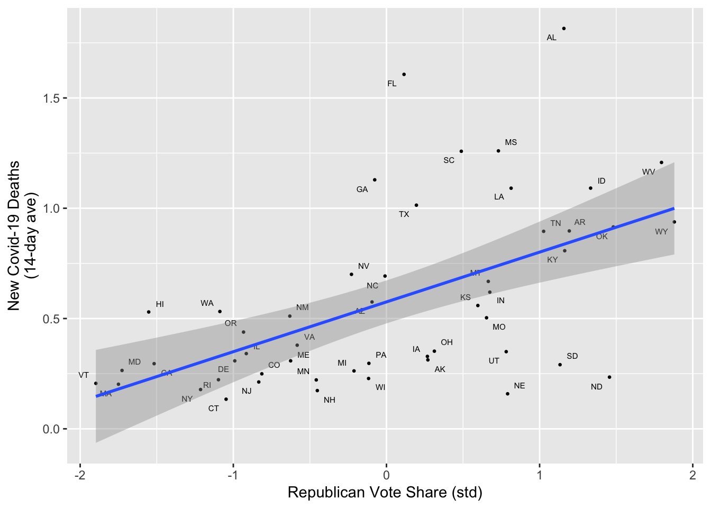

set.seed(3092022)
graded_question <- sample(1:10,size = 1)
paste("Question",graded_question,"is the graded question for this week")[1] "Question 6 is the graded question for this week"How to have an argument with regression
Your Group Members Names Here
January 24, 2024
Today we will explore the critiques and alternative explanations for the phenomena of “Red Covid” discussed by the NYT’s David Leonhardt in articles last fall here and more recently here.
Recall the core thesis of Red Covid is something like the following:
Since Covid-19 vaccines became widely available to the general public in the spring of 2021, Republicans have been less likely to get the vaccine. Lower rates of vaccination among Republicans have in turn led to higher rates of death from Covid-19 in Red States compared to Blue States.
A skeptic of this claim might argue that relationship between electoral and epidemelogical outcomes is spurious, saying somthing like:
There are lots of ways that Red States differ from Blue States — demographics, economics, geography, culture, and so on – and it is these differences that explain the phenomena of Red Covid. If we were to control for these omitted variables the relationship between a state’s partisan leanings and Covid-19 would go away.
In this lab, we will see how we can explore these claims using multiple regression to control for competing explanations.
To accomplish this we will:
Then we will estimate and interpret a series of regression models:
A baseline Red Covid model using simple bivariate regression using the Republican vote share of states to predict the 14-day average of per capita Covid-19 deaths on September 23, 2021 (10 Minutes)
A multiple regression model controlling for Republican vote share the median age (15 minutes)
A model controlling for Republican vote share, the median age and median income (15 minutes)
A model controlling for Republican vote share, the median age median income and vaccination rates (15 minutes)
A model using Republican vote share, the median age median income to predict vaccination rates (15 minutes)
Finally, we’ll take the weekly survey which will serve as a mid semester check in.
One of these 6 tasks (excluding the weekly survey) will be randomly selected as the graded question for the lab.
set.seed(3092022)
graded_question <- sample(1:10,size = 1)
paste("Question",graded_question,"is the graded question for this week")[1] "Question 6 is the graded question for this week"You will work in your assigned groups. Only one member of each group needs to submit the html file of lab.
This lab must contain the names of the group members in attendance.
If you are attending remotely, you will submit your labs individually.
Here are your assigned groups for the semester.
The primary goal of this lab is to give you lots of practice estimating and interpreting multiple regression models.
Questions 2-6 will all ask you to do some combination of the following:
lm()summary()Question 2 will also give you practice visualizing bivariate relationships
In general, when we interpret the regression coefficients from a linear model we want to know their:
* next to it is statistically significant
As with every lab, you should:
author: section of the YAML header to include the names of your group members in attendance.First lets load the libraries we’ll need for today.
There’s one new package, htmltools which we’ll use to display regression tables while we work.
the_packages <- c(
## R Markdown
"kableExtra","DT","texreg","htmltools",
## Tidyverse
"tidyverse", "lubridate", "forcats", "haven", "labelled",
## Extensions for ggplot
"ggmap","ggrepel", "ggridges", "ggthemes", "ggpubr",
"GGally", "scales", "dagitty", "ggdag", "ggforce",
# Data
"COVID19","maps","mapdata","qss","tidycensus", "dataverse",
# Analysis
"DeclareDesign", "easystats", "zoo"
)
# Define function to load packages
ipak <- function(pkg){
new.pkg <- pkg[!(pkg %in% installed.packages()[, "Package"])]
if (length(new.pkg))
install.packages(new.pkg, dependencies = TRUE)
sapply(pkg, require, character.only = TRUE)
}
ipak(the_packages) kableExtra DT texreg htmltools tidyverse
TRUE TRUE TRUE TRUE TRUE
lubridate forcats haven labelled ggmap
TRUE TRUE TRUE TRUE TRUE
ggrepel ggridges ggthemes ggpubr GGally
TRUE TRUE TRUE TRUE TRUE
scales dagitty ggdag ggforce COVID19
TRUE TRUE TRUE TRUE TRUE
maps mapdata qss tidycensus dataverse
TRUE TRUE TRUE TRUE TRUE
DeclareDesign easystats zoo
TRUE TRUE TRUE Next we’ll load the data that we created in class on Tuesday which provides a snapshot of the state of Covid-19 on September 23, 2021 in the U.S.
After running this code, the data frame covid_lab should appear in your environment pane in R Studio
In the code chunk below, please write some code get an high level overview of the data:
Please use this HLO to answer the following questions:
How many observations are there:
What is an observation (i.e. what is the unit of analysis):
What is the primary outcome variable for today:
What are the four main predictors we’ll be using:
Will we be using the the raw values of these predictors or their standardized values?
What is the standard deviation of our outcome and predictor variables:
First let’s estimate and interpret the following model:
\[\text{New Covid Deaths} = \beta_0 + \beta_1 \text{Republican Vote Share}_{std} + \epsilon\]
All you have to do is run the code chunks below and then interpret the results
When you visualize this model, you will have to write comments in the code
Then, you’ll use this code as guide for subsequent sections.
Now we apply the summary() function to our model m1
Call:
lm(formula = new_deaths_pc_14da ~ rep_voteshare_std, data = covid_lab)
Residuals:
Min 1Q Median 3Q Max
-0.66967 -0.21572 -0.03715 0.11169 1.00580
Coefficients:
Estimate Std. Error t value Pr(>|t|)
(Intercept) 0.57530 0.04846 11.872 6.88e-16 ***
rep_voteshare_std 0.22571 0.04895 4.611 2.99e-05 ***
---
Signif. codes: 0 '***' 0.001 '**' 0.01 '*' 0.05 '.' 0.1 ' ' 1
Residual standard error: 0.3427 on 48 degrees of freedom
Multiple R-squared: 0.307, Adjusted R-squared: 0.2925
F-statistic: 21.26 on 1 and 48 DF, p-value: 2.99e-05We see that m1 returns two coefficients, which define a line of best fit predicting Covid-19 deaths with the Republican vote share of the 2020 Presidential election:
\(\beta_0\) corresponds to the intercept. This is model’s prediction for a state where Trump got 0 percent of the vote. This is typically not something we care about.
\(\beta_1\) corresponds to the slope. Because we used a standardized measure of vote share, we would say that a 1-standard deviation (about 10 percentage points) increase in Republican vote share is associated with a 0.23 increase the average number of new Covid-19 deaths. Given that this per-capita measure has a standard deviation of 0.4, this is a fairly sizable association.
Finally, note that last column of summary(m1) Pr(>|t|) both the coefficients for the intercept \((\beta_0)\) and rep_voteshare_std (\((\beta_1)\)) are statistically significant (ie have an * next to them).
Next we’ll format the results of summary(m1) into a regression table using the htmlreg() function.
Regression tables are a the standard way of concisely presenting the results of regression models.
Each named row corresponds to the coefficients form the model
If there is an asterisks next to a coefficient, that coefficient is statistically significant with a p value below a certain threshold.
The numbers in parentheses below each coefficient correspond to the standard error of the coefficient (more on that later)2
The bottom of the table contains summary statistics of of our model, which we’ll ignore for today.
The code after htmlreg(m1) allows you to see what output of the table will look like in the html document while you’re working in the Rmd file.
| Model 1 | |
|---|---|
| (Intercept) | 0.58*** |
| (0.05) | |
| rep_voteshare_std | 0.23*** |
| (0.05) | |
| R2 | 0.31 |
| Adj. R2 | 0.29 |
| Num. obs. | 50 |
| ***p < 0.001; **p < 0.01; *p < 0.05 | |
Now let’s visualize the results of our m1 with a scatter plot.
In the code below, please write a comment explaining what each section of code is doing
#1. Comment for. with a brief comment explaining what the code below the comment does.# 1. Comment for the line of code below
covid_lab %>%
# 2. Comment for ggplot()
ggplot(aes(x = rep_voteshare_std,
y = new_deaths_pc_14da,
label = state_po))+
# 3. Comment for geom_point()
geom_point(
# 4. Comment for size =
size = .5
)+
# 5. Comment for geom_text_repel()
geom_text_repel(
# 6. Comment for size =
size = 2)+
# 7. Comment for geom_smooth
geom_smooth(method = "lm")+
# 8. Comment for labs
labs(
x = "Republican Vote Share (std)",
y = "New Covid-19 Deaths\n(14-day ave)"
)Warning: The following aesthetics were dropped during statistical transformation: label
ℹ This can happen when ggplot fails to infer the correct grouping structure in
the data.
ℹ Did you forget to specify a `group` aesthetic or to convert a numerical
variable into a factor?
In a sentence our two, summarize the results of your analysis in this section
You words here!
Suppose a skeptic reading the New York Times took issue with Leonhardt’s claims, and said what’s really behind the claim of Red Covid is that Republican states tend to be older and older people are more at Risk of Dying from Covid-19.
One way we could address this critique is by estimating a multiple regression model that controlled for age.
\[\text{New Covid Deaths} = \beta_0 + \beta_1 \text{Repbulican Vote Share}_{std} + \beta_2 \text{Median Age}_{std} + \epsilon\]
If our skeptic is right, what should happen to coefficients:
m1/ Decrease compared m1 / Unclear)If our critique is right, and the relationship between Partisanship and Covid is confounded by the fact that Red States tend to be older and older people are more likely to die from Covid, then controlling for Age, the coefficient on Republican Vote share should decrease in size (get closer to 0) and lose significance, while the coefficient on Age should be positive (older states have more Covid-19 deaths) and statistically signficant. I’m not sure I have a good sense about the size or magnitude of this effect.
Now let’s test our skeptics’ claims by fitting a model m2 that controls for Age (med_age_std).
lm() is formula of the form outcome variable ~ predictor1 + predictor2 + ...Now let’s print out a statistical summary of m2
Next, let’s create a regression table that displays m1 in the first column and m2 in the second column.
list(m1) from the code above to list(m1, m2)In a few sentences, explain whether the results from m2 support the skeptics criticisms or not?
Undeterred, our skeptic now argues that it’s not just age that matters but also socioeconomic factors like wealth.
Let’s test this claim using the following model:
\[\text{New Covid Deaths} = \beta_0 + \beta_1 \text{Repbulican Vote Share}_{std} + \beta_2 \text{Median Age}_{std} + \beta_3\text{Median Income}_{std}\epsilon\] If the skeptic is right, then controlling for age and income, the coefficient on Republican vote share should FILL IN WHAT SHOULD HAPPEN TO THIS COEFFICIENT
Please fit a model called m3 implied by the skeptic’s revised claims
Summarize the model m3 using summary()
And then display the results of models m1, m2, and m3.
In a few sentences, explain whether the results from m3 support the skeptics criticisms or not?
Controlling for median age and income, the coefficient on Republican sote share decreases in size by more than half and is no longer statistically significant. The coefficient on median income is statistically significant and substantively suggests that states with higher median incomes tended to have fewer Covid-19 deaths on September 23, 2021.
Hmm, maybe our skeptic has a point. Let’s estimate a model that controls for everything from m3 as well as the vaccination rate in each state.
\[\text{New Covid Deaths} = \beta_0 + \beta_1 \text{Rep Vote Share}_{std} + \beta_2 \text{Median Age}_{std} + \beta_3\text{Median Income}_{std}+\beta_4\text{Percent Vaxxed}_{std}\epsilon\]
You know the drill.
Again, let’s get a quick summary of our results
And add m4 to list of models in our regression table
Briefly interpret the results of m4
Hmm, how should we make sense of m4. Let’s fit one last model, that predicts vaccination rates as a function of Republican vote share, median age, and median income in a state.
\[\text{Percent Vaxxed} = \beta_0 + \beta_1 \text{Repbulican Vote Share}_{std} + \beta_2 \text{Median Age}_{std} + \beta_3\text{Median Income}_{std}\epsilon\] Briefly, please describe whether we should expect a statistically significant positive or negative relationship with vaccination rates or whether we should expect no statistically significant relationship.
\(\beta_1\) Republican Vote Share: (Negative / Positive / No Relationship)
\(\beta_2\) Median Age: (Negative / Positive / No Relationship)
\(\beta_3\) Median Income: (Negative / Positive / No Relationship)
Now let’s fit the model. For ease of interpretation, let’s use the unstandardized measure of vaccination rates, percent_vaccinated as our outcome variable.
And summarize the results
Display them in a regression table
Summarize the results of m5 and offer some broader discussion of what we’ve learned today
Please take a few moments to complete the class survey for this week.
In short, these * correspond to \(p-values\) below different thresholds. One * typically means \(p < 0.05\). A p-value is a conditional probability that arises from a hypothesis test summarizing the likelihood of observing a particular test statistic (here a regression coefficient, or more specifically, a t-statistic which is the regression coefficient divided by its standard error) given a paritcular hypothesis (typically, but not allows a null hypothesis that the true coefficient is 0). In sum, a p-value assess the likelihood of seeing what we did, if in fact, there was no relationship. If that likelihood is small (p<0.05), we reject the claim of no relationship. We remain uncertain about the true value of the coefficient, but we are pretty confident it’s not 0.↩︎
A standard error is another one of those things that in the cart we’re putting before horse today. Briefly, it is an estimate of the standard deviation of the sampling distribution of a coefficient and describes how much our coefficient might vary had we had a different sample…↩︎